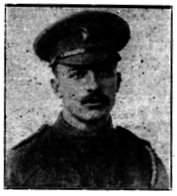

Fred Slade


Fred Slade was born in Cheshire before moving to Harrow and attending John Lyon School. He was one of three brothers, only one of whom survived the First World War. Fred died on the same day, in the same battle as his brother George.

Civilian Life - Fred Slade was born in Knutsford, Cheshire, in 1893, the youngest son of William and Emma Slade. The family later moved to Harrow, where Fred attended the Lower School of John Lyon. After leaving school, he entered the Export Department of Messrs Edward Lloyd Ltd., where he remained until shortly after the outbreak of the First World War. The Harrow Observer remembered him as someone who, in his school, business, social and home life, was “cheerful and happy”, earning the respect and affection of those around him.
Fred came from a family whose three sons would all be affected by the war. His elder brother George had worked for the Great Central Railway and, after the family moved to Harrow, on the staff of the Chief Goods Manager at Marylebone. George was described as an all-round sportsman who had captained several local clubs and was held in high esteem by his friends. Their other brother, Henry, also served and was wounded, but survived.
Military Life - Fred initially joined the 5th Battalion, Middlesex Regiment, but subsequently transferred to the Queen Victoria’s Rifles because he wanted to serve alongside his brothers. In early 1916, he and George enlisted in the 1st/9th Battalion, London Regiment (Queen Victoria’s Rifles), with Fred receiving service number 5872 and George 5808. Together they went to France on 12 July 1916.
On 9 September 1916, Fred and George were both killed during the fighting on the Somme. Fred was 23. The battalion took part in the attack during the Battle of Ginchy, advancing across difficult ground towards German positions near Bouleaux and Leuze Woods. Fred was killed during the fighting and was later buried at Serre Road Cemetery No. 2 in France.
The circumstances of the brothers' deaths made the family's loss particularly severe: Fred and George had enlisted together, served in the same regiment and company, travelled to France together, and died on the same day in the same battle. George's body was never recovered and he is commemorated on the Thiepval Memorial to the Missing of the Somme, while Fred was given a marked grave at Serre Road Cemetery No. 2. Their brother Henry had also served and was wounded, leaving their parents to face the loss of two sons while a third survived his wounds. The Harrow Observer described the news as a great loss to William and Emma Slade, reporting that two sons had been killed and another wounded. The tragedy of the three brothers was also recorded in the Newcastle Journal, which noted at the time that the Slades were one of three Harrow families to lose two sons in the recent fighting.